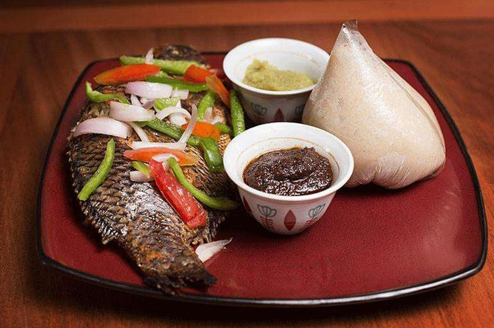
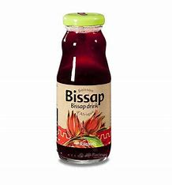

<style>
body{
    font-family: Arial, sans-serif;
    background-image: url("./img/6.jpg");
    background-size: cover;
    background-attachment: fixed;
    color: rgb(29, 29, 36); 
    text-align: justify; 
     margin: 20;
    padding: 10;
 }
 nav a{
     color: #030303df;
     text-decoration: none;
     margin: 0 10px;
 }
 .container{
     background-color: rgba(red, green, rgb(156, 156, 167), alpha);
     padding: 100px;
     margin: 100px auto;
     max-width: 800px;
     border-radius:50px;
 }
 img{
  max-width: 100%;
  height: 50%;
  border-radius: 50px;
 }
 form{
     display: block;
     flex-direction: column;
     align-items: center;
 }
 form input form label{
     margin: 5px 0;
 }
 .large-text{
     font-size: 24px;/*Adjust the size ads needed*/
 }
</style>
<dy>
    
    <h1>Jollof Rice</h1>
    <div class="menu-item">
        
         
      <p><h2>A delicious one-pot dish of rice cooked with tomatoes, onions, and spices. A staple in Ghanaian cuisine, perfect for any occasion.  </h3></p>

    </div>
    <div class="menu-item">
        <h1>Kelewele</h1>
        
        
        <p><h2>Spicy fried plantains, seasoned with ginger. garlic, and chili. A popular street food that's crispy on the outside and soft on the inside.</h2></p>

    </div>
    <div class="menu-item">
        <h1>Banku and Tilapia</h1>
        
        
        <P><h2>Banku, a fermentend corn and cassava dough, served with grilled tilapia and spicy pepper sauce. A true taste of Ghana's coastal region.</h2></P>
        
    </div>
    <div class="menu-item">
        <h1>Bissap</h1>
        
         
         
        <p><h2>A refreshing drink made from hibiscus leaves, known for its vibrant color and tangy taste. Perfect for cooling down on a hot day.</h2></p>

    </div>
    <div class="container" id="booking">
        <h1>Palm Wine</h1>
        
        <p><h2>A sweet and natural alcoholic beverage.</h2></p>
        </div>
    <div>
        <h1>You can also order for some special container foods</h1>
        
        
        
        
    </div>
   